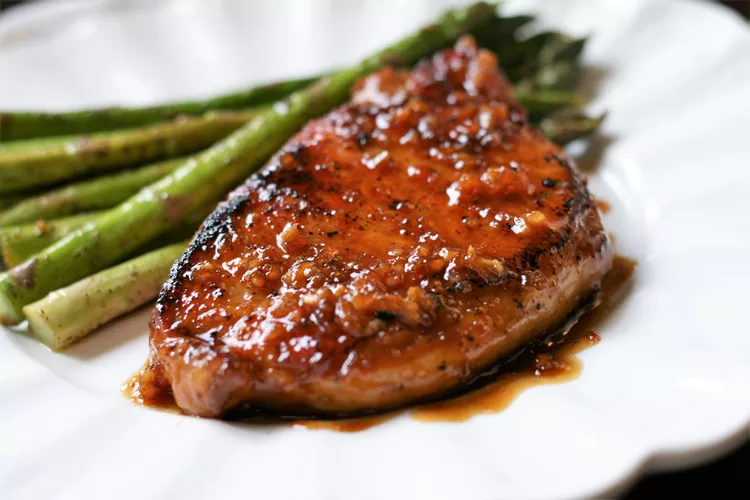

Honey-Garlic Pork Chops

This is a quick and easy recipe for pork chops in a flavorful
honey-garlic sauce.
Ingredients
- 4 pork chops
- salt and freshy ground black pepper to taste
- 1 teaspoon garlic powder
- 2 tablespoons olive oil
- 1 tablespoon unsalted butter
- 6 cloves garlic, minced
- 1/4 cup honey
- 1/4 cup water
- 2 tablespoons rice vinegar